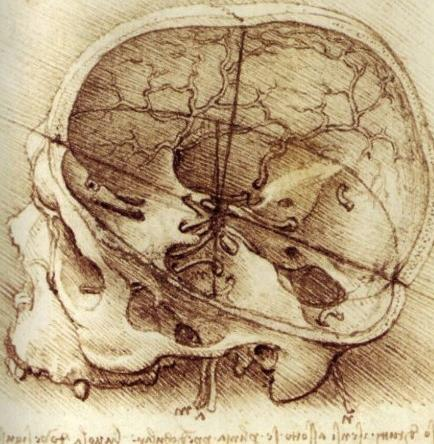

For thousands of years, people argued about how the eye works. Leonardo had a different approach: do not argue, test. He was not shy about saying the old writers were wrong:
In his own words
The eye, whose function we so certainly know by experience, has, down to my own time, been defined by an infinite number of authors as one thing; but I find, by experience, that it is quite another.
By experience, he means testing it himself, with his own eyes. Here is one of his experiments. Imagine a dark room with one small round hole in the wall.
In his own words
An experiment, showing how objects transmit their images or pictures, intersecting within the eye in the crystalline humour, is seen when by some small round hole penetrate the images of illuminated objects into a very dark chamber. Then, receive these images on a white paper placed within this dark room and rather near to the hole and you will see all the objects on the paper in their proper forms and colours, but much smaller; and they will be upside down by reason of that very intersection.
Light from the sunny world outside squeezes through the hole and paints a tiny picture on the paper: right colors, right shapes, but small and upside down. Leonardo's point: the same thing happens inside your eye. The picture lands upside down. (Your brain flips it back, which is a modern discovery, not his.)

Your pupil is a dimmer switch
In his own words
The pupil of the eye contracts, in proportion to the increase of light which is reflected in it.
The pupil of the eye expands in proportion to the diminution in the day light, or any other light, that is reflected in it.
The eye perceives and recognises the objects of its vision with greater intensity in proportion as the pupil is more widely dilated; and this can be proved by the case of nocturnal animals, such as cats, and certain birds--as the owl and others--in which the pupil varies in a high degree from large to small, &c., when in the dark or in the light.
Short version: bright light shrinks your pupil, dim light opens it wide, and a wider pupil sees more in the dark. His proof is the cat and the owl, animals that hunt at night.
One more test you can do right now
In his own words
If the eye is required to look at an object placed too near to it, it cannot judge of it well--as happens to a man who tries to see the tip of his nose.
Try it. Hold your finger a few inches from your face. Leonardo is right: it goes blurry.
Words to know
- pupil
- the black circle in the middle of your eye that lets light in
- dilated
- opened wide
- crystalline humour
- his name for the clear, lens-like part inside the eye
- nocturnal
- active at night
Try it
Optional. For after your session with Rocky, on your own time. Ask a grown-up before you use any website.
- Make a camera obscura out of a shoebox, foil, a pin and white paper, and see the upside-down world for yourself.
- Pupil test: in a dim room, look at your eyes in a mirror, then turn on the room light and watch your pupils shrink. (Room light only, never a flashlight in the eyes.)
- Museum of Science, Boston: Open Window. Tape clear plastic to a window, close one eye, and trace what you see.